The History of Tennis
by Antony Tran
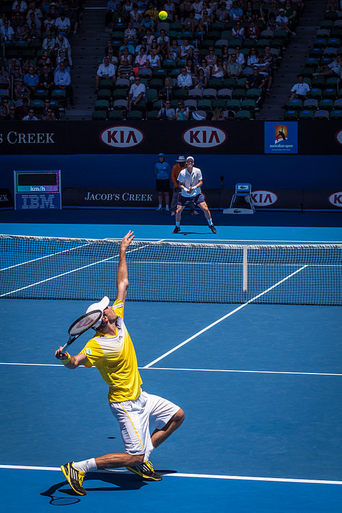
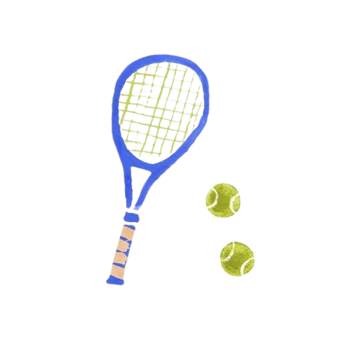
What is tennis?
Tennis is a racket sport that is played either individually against a single opponent (singles) or between two teams of two players each (doubles). Each player uses a tennis racket strung with a cord to strike a hollow rubber ball covered with felt over or around a net and into the opponent's court. The object of the game is to manoeuvre the ball in such a way that the opponent is not able to play a valid return. The player unable to return the ball validly will not gain a point, while the opposite player will. -Wikipedia
2 / 3
It Started in France
"JEU DE PAUME" - Game of Palm
In Jeu de Paume, players hit the ball with their hands instead of using rackets, which were introduced later. The game was popular among the French nobility and quickly spread across Europe, including to England and Italy. In England, King Henry VIII became a notable fan of the game, and it was during his reign that indoor courts were built in royal palaces.
3 / 3
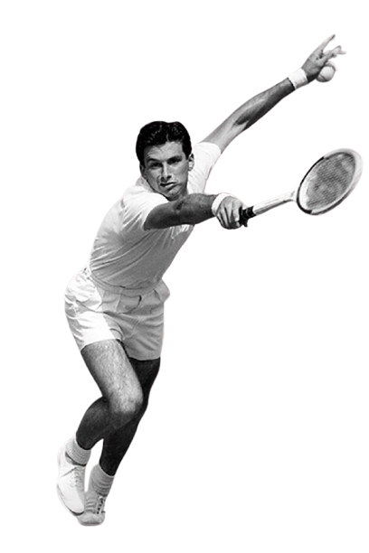
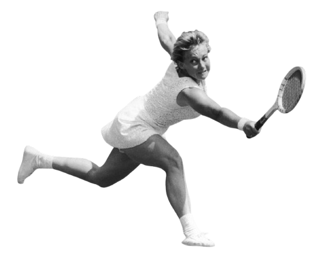
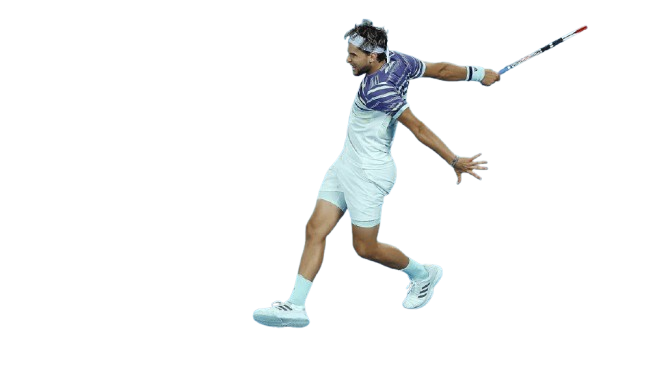
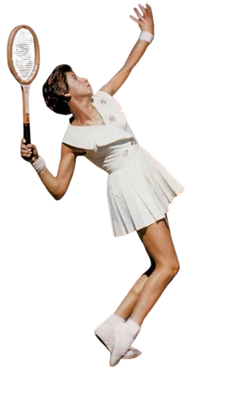
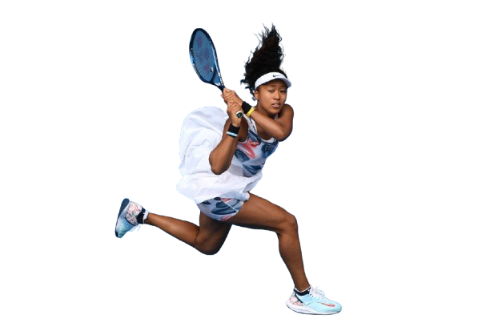
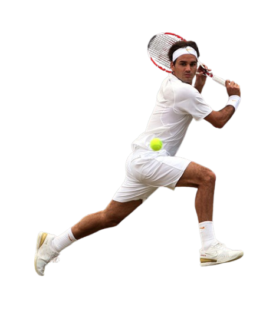
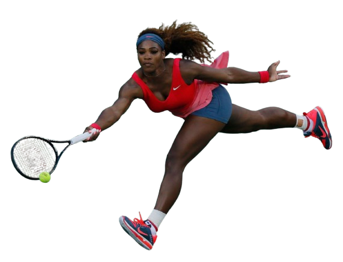
Modern tennis as we know it began in 1873, when Major Walter Clopton Wingfield, a British army officer, developed a new version of the game that he called Sphairistikè (a Greek word meaning “ball playing”). Wingfield's version of the game was designed to be played on grass, which is why tennis is often referred to as "lawn tennis." The game was first played at Leamington Spa, England, and quickly gained popularity among the British upper class. The first Wimbledon Championship, the oldest and most prestigious tennis tournament, was held in 1877 at the All England Croquet and Lawn Tennis Club.
Tennis Goes Modern
3 / 3
Tennis goes Professional
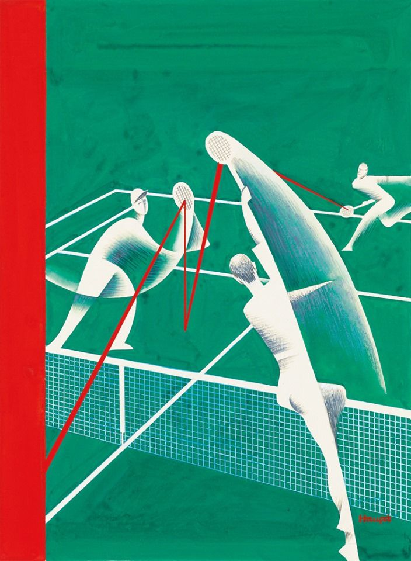
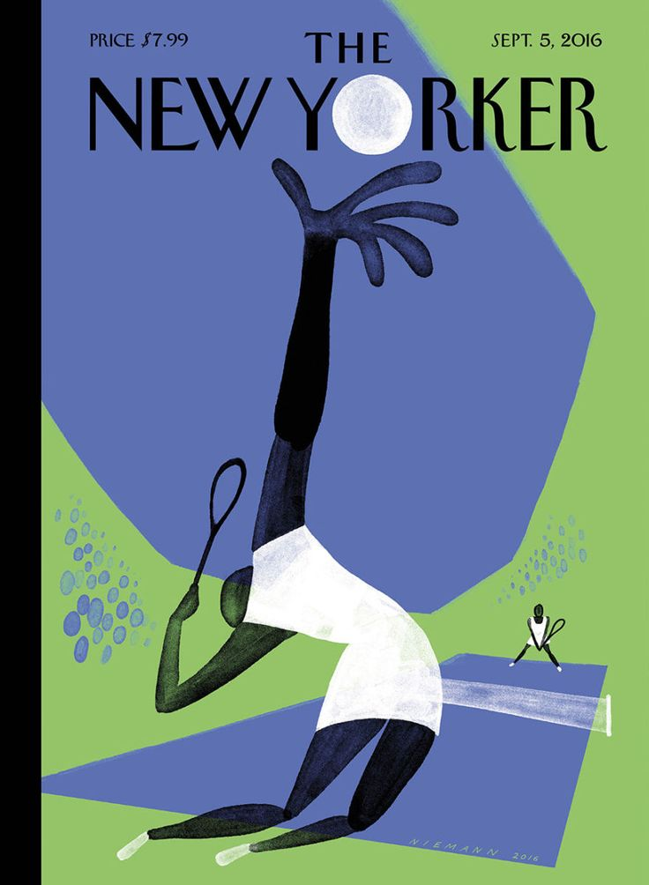
1968

In 1968, professional tennis players were allowed to compete in the Grand Slam tournaments for the first time. This marked the beginning of the Open Era in tennis, which allowed both amateur and professional players to compete in the same events. The move to professionalism transformed the sport, making it more competitive and increasing the popularity of the game around the world.
In 1972, male players formed the Association of Tennis Professionals (ATP), and in 1973, female players led by Billie Jean King created the Women's Tennis Association (WTA). King’s 1973 “Battle of the Sexes” victory was a pivotal moment for women’s tennis.
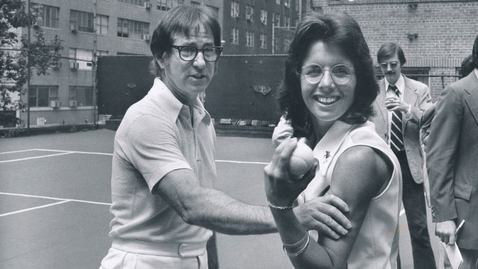
3 / 3
3 / 3
3 / 3